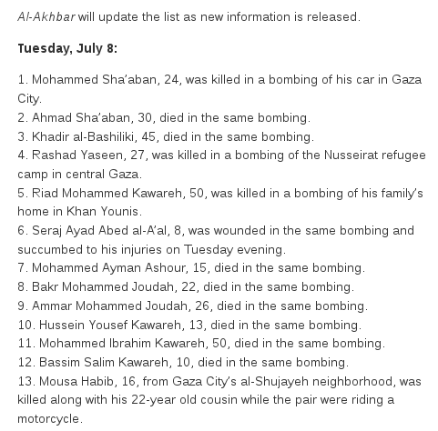
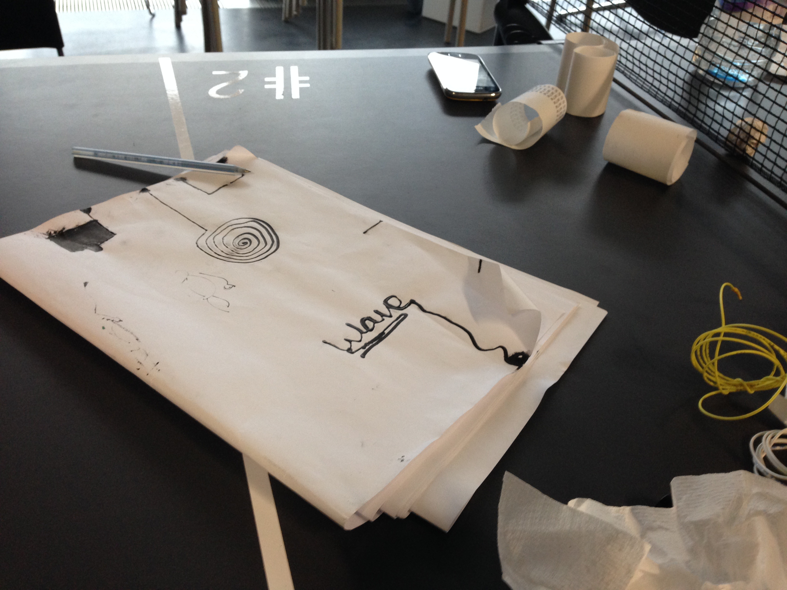
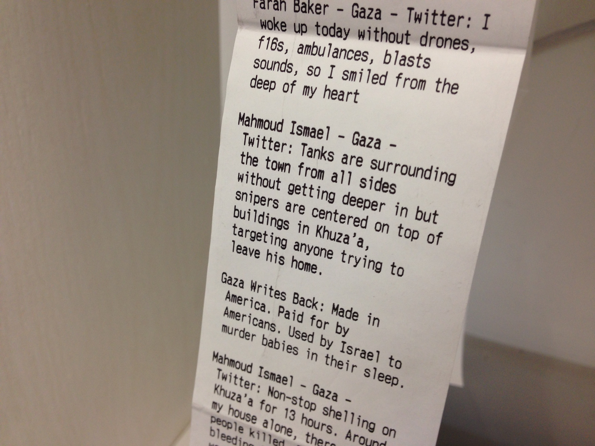
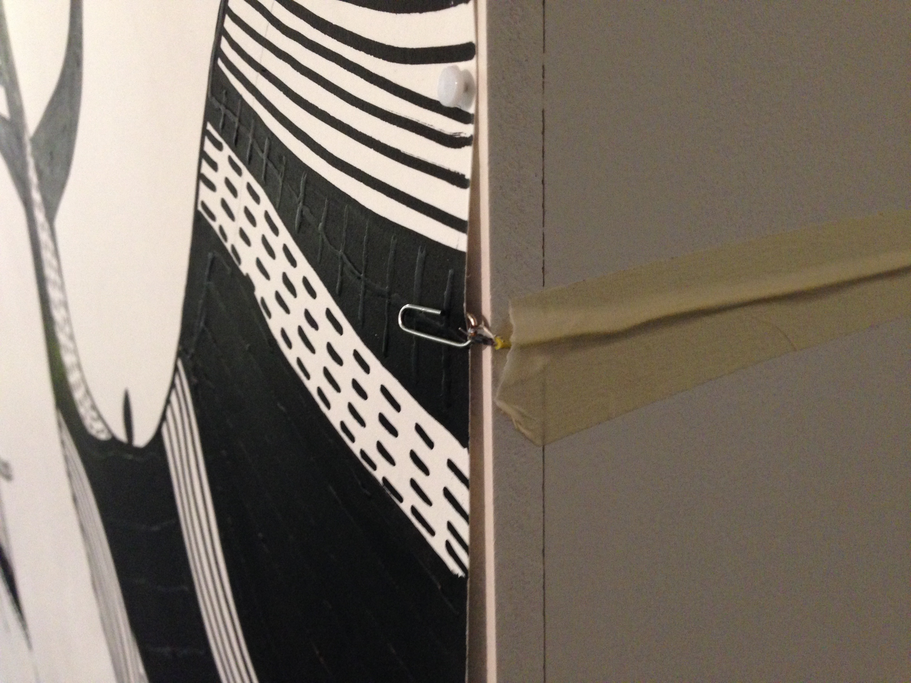
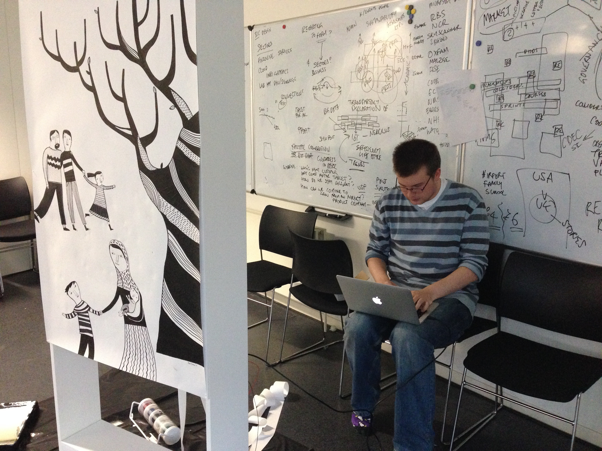

Listening to voices
##Purpose
- Think about design
- Chris asked me to talk about two of my recent collaborative pieces
- [Zaytoun](http://hadi.link/work/news/2014/09/03/Zaytoun/) work by: [Chris Barker](https://twitter.com/Chris_Barker), [Mina Braun](http://minabraun.blogspot.co.uk/2011/03/magic-little-lightbox.html), [Hadi mehrpouya](http://hadi.link)
- [Saad](http://saadproject.uk) work by: [Anais Moisy](http://www.anaismoisy.com/), [Hadi Mehrpouya](http://hadi.link)

Design
Hardware design
Software design
Critical design
Co-design
Biological design
Game design
Interface design
Graphic design
Product design
Process design
Urban design
...
##Problem space
##Search space
#Problem space
- Spaciality of problem space
- Programs
- Strategies
- Technologies
- Temporality of problem space
Liberation squaresLife Animated
##[Zaytoun](http://hadi.link/work/news/2014/09/03/Zaytoun/)

#Data
- Twitter
- 150,000 tweets
- Alkhabar

Alkhabar example of data



